Main Paragraphs
Biography
I PROVIDE SOLUTIONS THROUGH VISUAL DESIGN, RAPID PROTOTYPING, AND REFINEMENT.
Hi and welcome to my website! My name is Emily and I'm a designer based in Vancouver with a focus in digital experience who is interested in entering the UI/UX or Product Design Industry. I had the opportunity to gather experience in the industry as a specialist at Apple,
which has fostered my proactive approach in team work. I approach conflict with positive intent as the basis to communicating with my peers to collectively learn and grow together. With a diverse toolkit of skills,
ranging from product design to user experience (UI/UX), I am confident in my skills to engage in teamwork and provide personalized solutions.
Analysis and Explanation Project One Paragraph
With the applications taught in IAT 343, the team sought to create an interactive website
that demonstrated 3D modelling techniques and principles of Animation into the final project.
Our project Translink 2050 Envision, centers on the improvements Translink aims to bring to the
public by the given date.The team viewed it as an opportunity to influence the viewing experience;
we aimed to reveal information to users differently, and so enforced user interaction to contrast
from traditional applications of 3D animation and modelling. With an interactive 3D transportation
island as the landing page, users are greeted with transportation models that each have an integrated
link leading to a unique 360-degree animated video that users can then view and interact with.
Analysis and Explanation Project Two Paragraph
After numerous hands-on experience with materials in design, the design team had been challenged to design a water purification artifact for a non-governmental organization (NGO)
that provided relief for victims of disasters and war.
With function and form being a main aspect into the development of a product, the team strove to understand branding with the experience of a consumer in mind. My role
was to model and build the visual design. This included understanding user experience and prototyping through a personalized solution to victims of disasters and war despite the constraints
in the involvement of materials.
Problems and Resolution Project One Paragraph
One difficulty that we encountered while working on a 3D Modelling Software, such as Maya,
was it's inability to feature collaborate editing. Aligning with other team members turned out
to be very difficult, as each individual's commitment to the project would be apparent in their
individual files. As a result, discrepancies between the existing files would occur, and the team
would need to reassemble all the necessary changes together. One benefit that came across animating
in maya, was its ability to copy and paste keyframes to other files. With that in mind, the team was
able to simultaneously work on rigging and animation, and although there were visual changes to the
island, it did not affect the animation as long as it was in the same coordinate system as the previous files.
Problems and Resolution Project Two Paragraph
As CLUO™ is premised with supporting human necessities, its
design aims to alleviate the frustrations of end users who are faced with a multitude
of consequences from being victims of natural disasters. As there is a potential
crisis to the availability of clean food and water, CLUO’s adjustable straps support users with a hands-free experience
providing convenience where mobility is necessary to survival. Moreover, with a detachable
cup found at the base of the bottle, it provides added functionality to protect, gather,
and share with the community.
Evaluating the Effectiveness Project 1 Paragraph
As a part of the project's objective to visualize change from user experience, the design and work
to assembling an interactive website, provided opportunities for users to interact with immersize experiences
to help them get more familiar with the changes that are to come in the near future. I was involved in the
concept and design of the website, providing users of an in-depth analysis and portrayal of Transporation in 2050.
Evaluating the Effectiveness Project 2 Paragraph
With the class being heavily focused in material usage, prescribing the correct fabrication and bonding
techniques proved to be a challenge in providing a correct solution to the given context.
The project's design intent to appeal to the user, while simultaenously recognizing the motivations and frustrations of end-users
drove the team to adjust and adhere to a user's need. After receiving insight by fellow mentors
the team learned to listen to the needs, motivations, and frustrations of a user to shape our final design.


 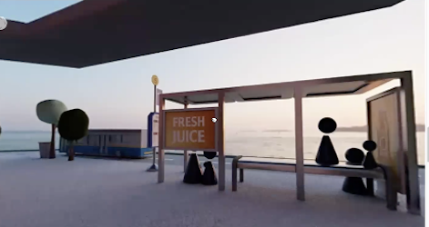
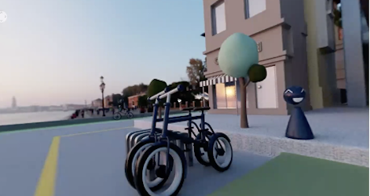
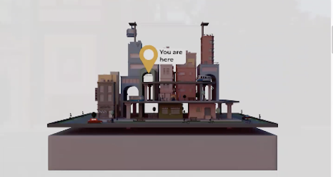
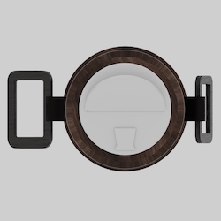
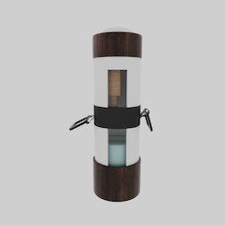
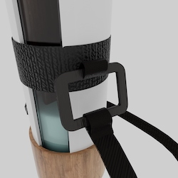
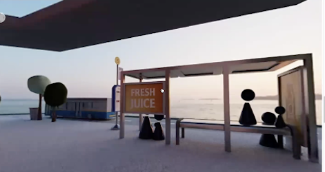
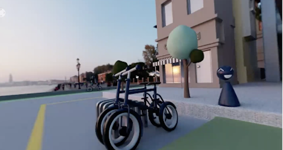
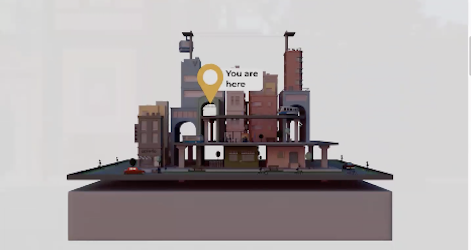
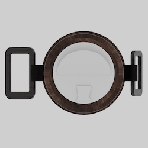
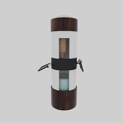
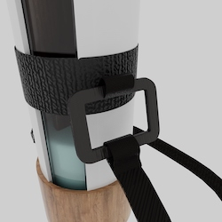